Research Abstract
Deep learning for cardiac MRI needs a lot of labelled data, but scans are scarce, differ between scanners and are protected by privacy rules. Generative models can add synthetic scans, but most only control the anatomy of the heart, for example with a mask. This project asks whether generation can be controlled by information about the patient: height, weight, chamber volumes, ejection fractions and wall measures.
We use a two-stage pipeline. Stage 1 turns 26 clinical features and noise into a segmentation mask. Stage 2 turns the mask and noise into a synthetic cardiac MR image, comparing a SPADE GAN baseline with a flow matching model. The generator is judged on image quality, on whether the masks follow the profile they were given, and (still to do) on usefulness and privacy.
Objectives
Main objective. Investigate how clinical-profile information can give fine-grained control over the generation of synthetic cardiac MR images together with their segmentation masks.
O1. Build it
Develop a baseline generative model without clinical-profile conditioning, and a conditioned version built on top of it.
O2. Check it works
Check that the generated images and masks keep plausible anatomy and reflect the profile they were conditioned on.
O3. Compare it
Compare the conditioned model with the baseline on fidelity, downstream utility and privacy.
Research Questions
| Question | Status | Answer so far |
|---|---|---|
| RQ1.1 What clinical information is available and suitable for conditioning? | Answered | ACDC has diagnosis, height and weight; M&Ms adds age and sex. Features calculated from the masks are used as the condition (26 now). |
| RQ1.2 How can it be built into generating images and masks? | Built | A two-stage pipeline, run end to end: features and noise to a mask to an image. |
| RQ2.1 Do generated images and masks keep plausible anatomy? | Measured | 68% of first-draw masks pass the anatomy checks (93% of real ones); with the filter (up to 20 redraws) 99.9% pass. The checks cover structure only, not clinical realism. |
| RQ2.2 Do they reflect the clinical profile? | Measured | Yes for size and volumes, moderate for ejection fraction, weak for fine wall details (see Results). |
| RQ3.1 Effect of conditioning on fidelity and anatomy, against a baseline without it | Measured (one run) | The profile improves how masks follow real slices (LV r 0.64 vs 0.08) and lowers FID (124.3 to 119.8). Repeats and test sets still open. |
| RQ3.2 Effect on downstream utility | Planned | Segmentation trained on real, synthetic and combined data. |
| RQ3.3 Effect on privacy | First check done | No exact copies of training images found; membership-inference tests still to do. |
System Pipeline
Stage 1: features to mask
26 clinical features, the slice position, ED or ES, and noise go into a flow matching mask generator. A filter redraws masks with broken anatomy.
Stage 2: mask to image
The mask and noise go into an image model: a SPADE GAN baseline, and a flow matching image model.
Checks
Image quality (FID, KID), anatomy checks, whether the masks follow the requested features, then usefulness and privacy.
Data
| Dataset | Used for | Size | Clinical information |
|---|---|---|---|
| ACDC | Training and validation: 85 / 15 patients. Test set untouched. | 100 labelled patients, 1,902 slices, 5 groups of 20 (normal, MINF, DCM, HCM, RV) | Diagnosis, height, weight |
| M&Ms | External test set, not yet used | 345 cases with masks, 7,908 slices, several scanners and centres | Pathology, age, sex, weight |
Clinical features
The 26 clinical featuresequations and worked examples
Why these 26
- The first 14 are the features used to classify the five ACDC diagnoses in the challenge paper by Wolterink et al.: height, weight, volumes, ejection fractions and ratios. They carry the diagnosis information.
- The 12 added (wall thickness, septal thickness, circularity) were picked from a list of 57 features in the literature, after the first masks were judged too regular. They describe wall and shape, which the first 14 only cover indirectly (for example, a thick wall in HCM or a rounder, dilated LV in DCM).
- Rule for every feature: it must be calculable from a mask alone, so it can be measured again on a generated mask and the mask checked against the value it was given.
- Test: groups of features were removed one at a time. Septal thickness and wall-thickness spread helped their own control, and circularity carried some diagnosis signal (78% read-back without it, 89% with it). Mean and maximum thickness gave no clear gain but did no harm, so all 26 were kept.
14 features were used first and 12 (wall thickness and shape, rows 15 to 26) were added on 3 to 5 November. All except height and weight are calculated from the segmentation mask, so they can be measured on generated masks in exactly the same way. All examples use round numbers, not a real patient.
Step 1: from a mask to a volume
A mask labels every pixel as background, right ventricle (RV), myocardium (MYO) or left ventricle (LV). A volume is the number of pixels with a label, summed over all slices of a phase, times the volume of one voxel. ED is end-diastole (heart full), ES is end-systole (heart squeezed).
Vkph = Nkph × Δx × Δy × Δz ÷ 1000
N is the pixel count, Δx = Δy = 1.5 mm, Δz is the slice thickness (for example 10 mm), and dividing by 1000 turns mm³ into mL.
Example. 5,000 LV pixels at ED and 10 mm slices: one voxel is 1.5 × 1.5 × 10 = 22.5 mm³, so VLVED = 5,000 × 22.5 ÷ 1000 = 112.5 mL. With 2,000 LV pixels at ES: VLVES = 45 mL.
Step 2: ejection fractions and ratios
Example. EFLV = 100 × (112.5 − 45) ÷ 112.5 = 60%. If the RV volume at ED is 100 mL, the RV/LV ratio at ED is 100 ÷ 112.5 = 0.89. If the myocardium volume at ED is 90 mL, the myocardium/LV ratio is 90 ÷ 112.5 = 0.80.
Step 3: wall thickness
On each slice the myocardium is thinned to its centre line. For each centre-line pixel, thickness is t = 2 × d × 1.5 mm, where d is the distance in pixels to the nearest edge of the myocardium. All centre-line values of all slices in a phase are pooled, then the mean, standard deviation and maximum are taken. Septal thickness uses only the centre-line pixels within 4 pixels of the RV.
Example. A centre-line pixel with d = 4 pixels has t = 2 × 4 × 1.5 = 12 mm. If the pooled values were 10, 12 and 14 mm, the mean is 12 mm, the spread (SD) is √((4 + 0 + 4) ÷ 3) = 1.6 mm and the maximum is 14 mm.
Step 4: circularity
For the largest region of the LV (or RV) on a slice, C = 4π × area ÷ perimeter². A perfect circle gives 1, and elongated or irregular shapes give less. The value is averaged over the slices where the structure is present.
Example. A circle of radius 20 pixels has area π × 20² = 1,257 and perimeter 2π × 20 = 125.7, so C = 4π × 1,257 ÷ 125.7² = 1.00. An irregular region with area 1,000 and perimeter 140 gives 4π × 1,000 ÷ 19,600 = 0.64.
All 26 features
| # | Feature | Equation | In words |
|---|---|---|---|
| 1 | Height | H (cm) | From the patient file. |
| 2 | Weight | W (kg) | From the patient file. |
| 3 | LV volume, ED | VLVED | Step 1 above. |
| 4 | LV volume, ES | VLVES | Step 1 above. |
| 5 | RV volume, ED | VRVED | Step 1 above. |
| 6 | RV volume, ES | VRVES | Step 1 above. |
| 7 | Myocardium volume, ED | VMYOED | Step 1 above. |
| 8 | Myocardium volume, ES | VMYOES | Step 1 above. |
| 9 | LV ejection fraction | EFLV = 100 × (VLVED − VLVES) ÷ VLVED | Percentage of the LV blood pumped out in one beat. |
| 10 | RV ejection fraction | EFRV = 100 × (VRVED − VRVES) ÷ VRVED | The same for the RV. |
| 11 | RV/LV ratio, ED | VRVED ÷ VLVED | One volume divided by the LV volume in the same phase. |
| 12 | RV/LV ratio, ES | VRVES ÷ VLVES | One volume divided by the LV volume in the same phase. |
| 13 | Myocardium/LV ratio, ED | VMYOED ÷ VLVED | One volume divided by the LV volume in the same phase. |
| 14 | Myocardium/LV ratio, ES | VMYOES ÷ VLVES | One volume divided by the LV volume in the same phase. |
| 15 | Wall thickness mean, ED | t̄ED | Step 3 above. |
| 16 | Wall thickness mean, ES | t̄ES | Step 3 above. |
| 17 | Wall thickness spread (SD), ED | SD(t)ED | Step 3 above. |
| 18 | Wall thickness spread (SD), ES | SD(t)ES | Step 3 above. |
| 19 | Wall thickness maximum, ED | max(t)ED | Step 3 above. |
| 20 | Wall thickness maximum, ES | max(t)ES | Step 3 above. |
| 21 | Septal thickness mean, ED | t̄septED | Step 3, only next to the RV. |
| 22 | Septal thickness mean, ES | t̄septES | Step 3, only next to the RV. |
| 23 | LV circularity, ED | CLVED = 4πA ÷ P² | Step 4 above. |
| 24 | LV circularity, ES | CLVES = 4πA ÷ P² | Step 4 above. |
| 25 | RV circularity, ED | CRVED = 4πA ÷ P² | Step 4 above. |
| 26 | RV circularity, ES | CRVES = 4πA ÷ P² | Step 4 above. |
Skewed features are log-transformed and all are standardised before they enter the model. All 26 were kept after removing groups in a test: dropping circularity gave no gain and lowered the diagnosis read-back from the masks (78% against 89%). See the full details.
Generated Output
Masks generated from clinical features for patients the model never saw. Colours: blue right ventricle, olive myocardium, red left ventricle.
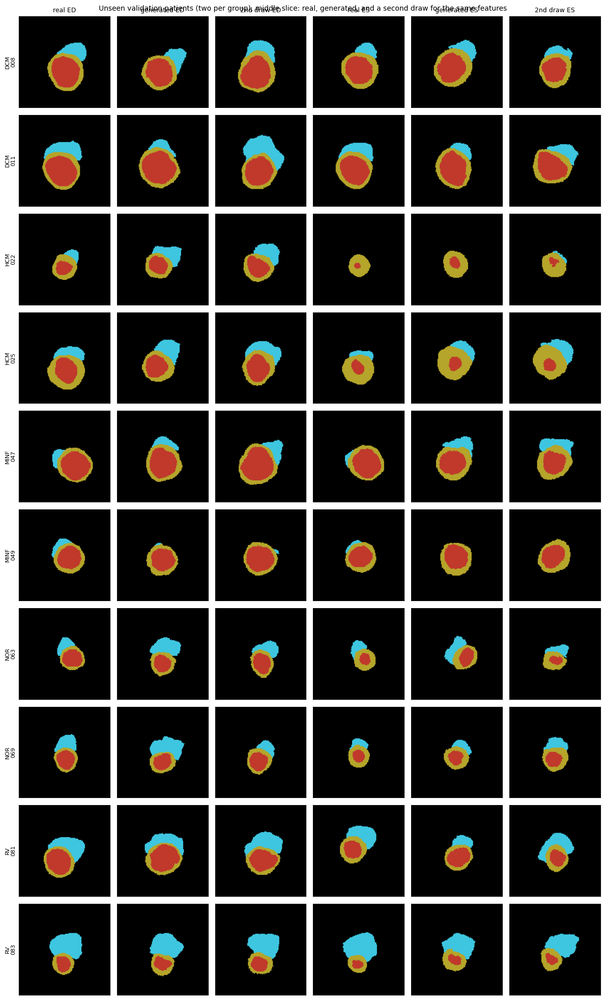
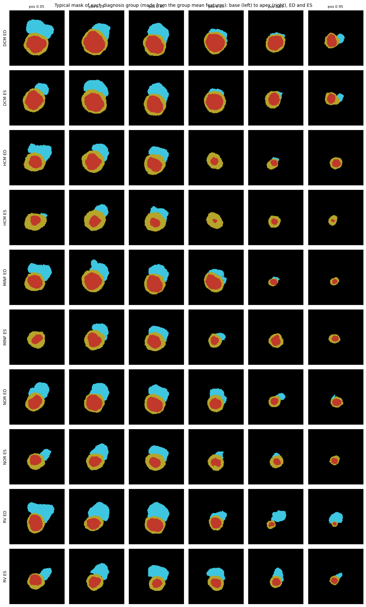
One unseen validation patient per diagnosis group. From top to bottom: the real image, the real mask, the image the model makes from the real mask, the mask generated from the 26 clinical features and noise (final generator, with the anatomy filter), and the image made from that generated mask.
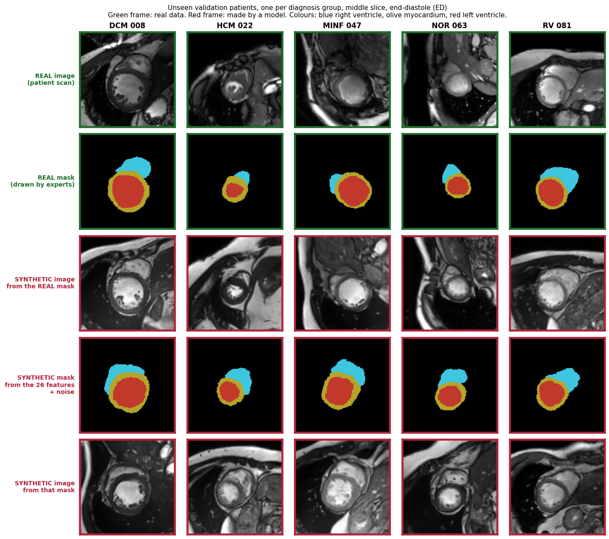
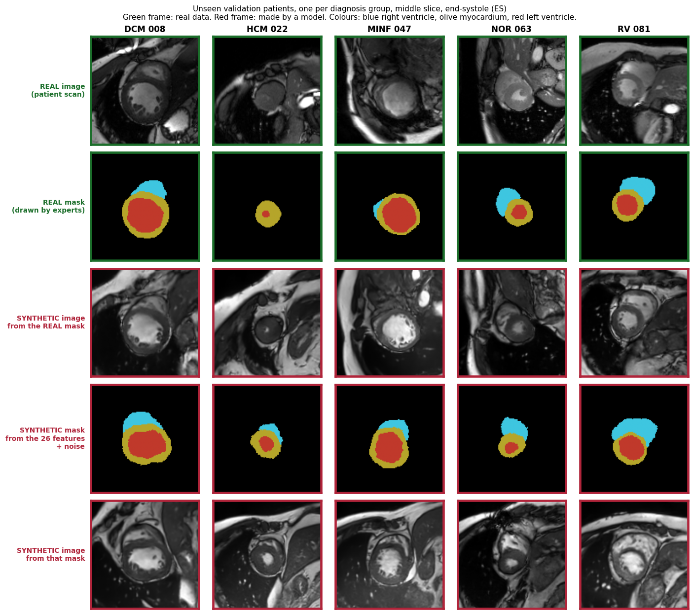
The generated masks have the size and shape expected for each group (large LV in DCM, small heart in HCM), and the image model turns them into plausible cardiac scans. The generated masks are not copies of the real ones: the RV is often larger than the real RV, and the very small HCM heart at ES is generated with a larger LV cavity than the real one.
More examplessecond patient, apex slice, base to apex, same profile with different noise
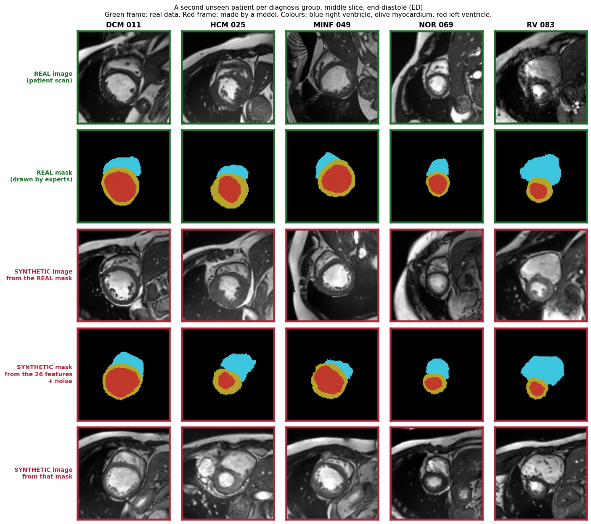
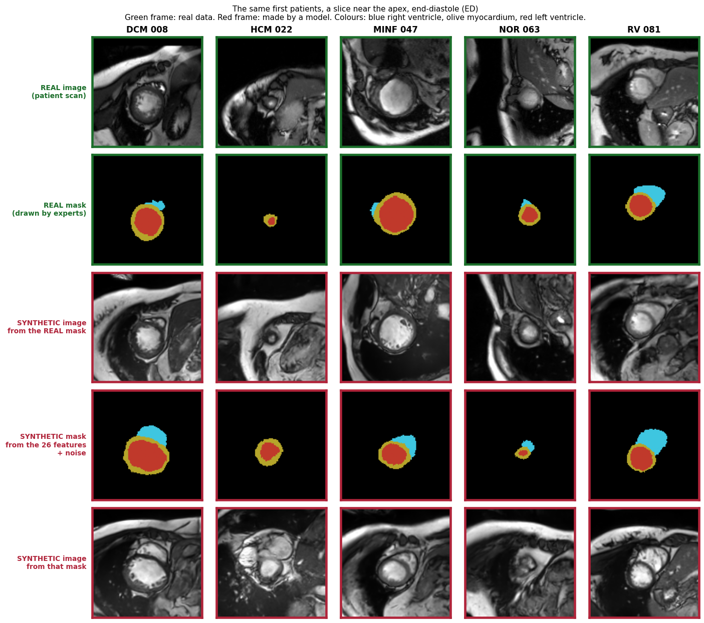
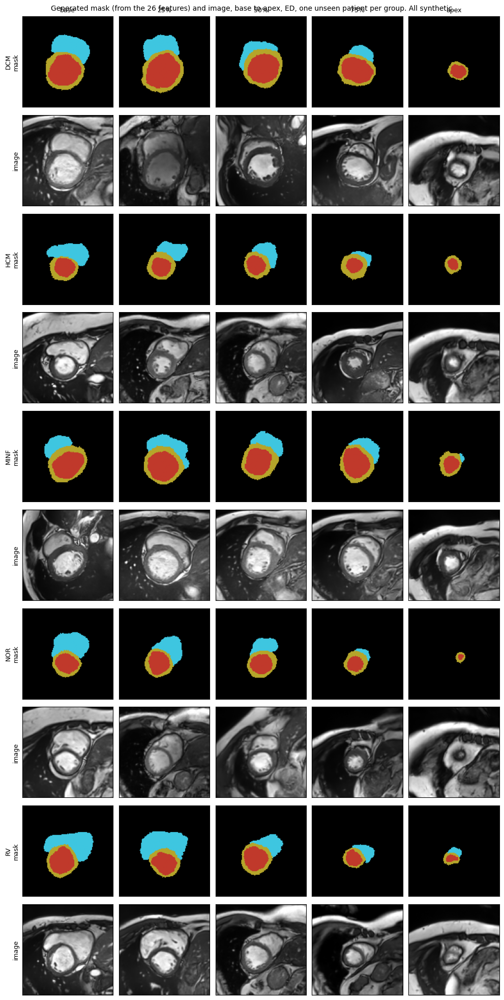

Generative Models Benchmarked
Conditional VAE (mask, first version)
Encoder and decoder with the features as condition. Smooth masks that are too regular, and a size sweep hardly changes them. Page: architecture.
Flow matching mask generator
FiLM U-Net, classifier-free guidance, 50 Euler steps, 26 features. More varied masks that scale with size. Needs the anatomy filter.
SPADE GAN
Generator that feeds the mask into every block, trained against a discriminator. Page: architecture.
Flow matching image model
Velocity U-Net with the mask added in every block, classifier-free guidance, 50 steps. Page: architecture.


Results & Comparative Analysis
Image models (lower is better)
| Image model | Masks given | FID ↓ | KID ↓ |
|---|---|---|---|
| SPADE GAN (baseline) | real | 189.5 | 0.122 |
| Flow matching | real | 118.8 | 0.040 |
| Flow matching | generated from the 26 features, with filter | 118.1 | 0.039 |
| Floor: real vs real images | – | 99.0 | 0.005 |
Mask generators: VAE against flow matching
| VAE | Flow matching | |
|---|---|---|
| Anatomy checks passed, first draw (real masks 93%) | 92% | 77% |
| Slice-area correlation, RV / MYO / LV | 0.59 / 0.83 / 0.86 | 0.82 / 0.88 / 0.91 |
| Slice-area spread, generated SD / real SD (1 = same) | 0.67 / 0.89 / 0.80 | 1.12 / 1.14 / 1.09 |
| Variety between draws (Dice, lower = more varied) | 0.94 | 0.85 |
| Images from the masks with filter, FID (real masks 119.9) | 130.6 | 116.7 |
| Follows requested feature values (mean r over features) | 0.88 | 0.79 to 0.84 |
Flow gives realistic slice sizes and variety, and images as good as real masks. The VAE is more precise on feature values. Flow was chosen for realism and image quality.
With and without the clinical profile
| Without profile | With profile | |
|---|---|---|
| LV area correlation with the real slice | 0.08 | 0.64 |
| Patient LV volume, correlation | 0.45 | 0.95 |
| Image FID | 124.3 | 119.8 |
22 features (no circularity) against all 26
| 22 features | 26 features | |
|---|---|---|
| Diagnosis read back from the masks (real features 93%) | 78% | 89% |
| LV ejection fraction, correlation | 0.91 | 0.92 |
| Image FID | 117.6 | 118.1 |
FID differences below about 2 are seed noise, and one validation patient is 6.7 diagnosis points. All tables and runs
Results
Flow matching is much better
FID falls from 189.5 to 118.8: about 20 points above the real-vs-real floor, against about 90 for the GAN.
The full generator works
From features and noise alone, with no real mask or image, images score as well as with real masks.
The features steer the masks
Masks follow the features they are given (correlation 0.76) and not the patient's own (−0.17).
Precision varies by feature
Strong for size and volumes, moderate for ejection fraction, weak for fine wall details.
Do the generated masks follow the clinical features?
Final mask generator, 15 unseen validation patients.
| Check | Result |
|---|---|
| Fed features vs own features (shuffle control, correlation) | 0.76 vs −0.17: the masks follow the requested features |
| Size sweep, all volumes ×0.6 to ×1.6 | LV area grows steadily, 711 to 940 px |
| EF sweep, 20% to 70% | End-systolic LV area shrinks steadily, 584 to 350 px |
| Diagnosis read back from the masks (real features: 93%) | 89% |
| Anatomy checks on first draws | 68% pass; the filter redraws the rest (apex slices worst, 61%) |
| Ejection fractions | Pulled towards the average; RV EF weakest (slope 0.35) |
| Very small hearts | Missed |
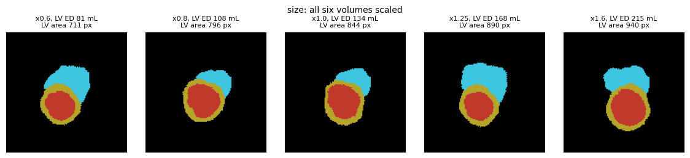
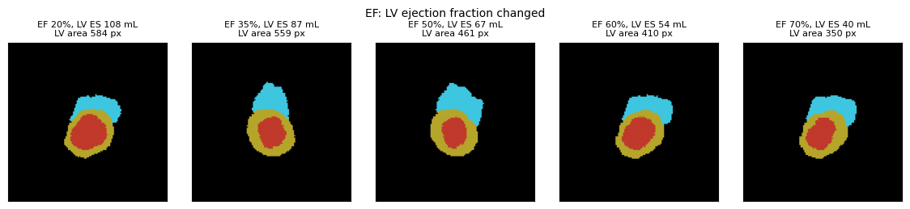
Features to masks: full numeric and visual evaluation (11 Nov)every feature, every diagnosis group, more figures
The final mask generator (flow matching, 26 features, foreground weight 1) was evaluated on the 15 unseen validation patients: 2 training seeds × 3 noise seeds, raw masks and masks after the filter. Each generated mask is measured with the same code that calculated the features, then compared with the value it was asked for.
Summary over the 6 runs
| Measure | Result |
|---|---|
| Anatomy checks passed, first draw (real masks 93%) | 68% (range 63 to 75%) |
| Anatomy checks passed after the filter | 99.9% |
| Slice-area correlation, RV / MYO / LV | 0.82 / 0.87 / 0.90 |
| Slice-area spread, generated SD / real SD | 0.87 |
| Mean correlation over the 24 mask-derived features | 0.79 |
| Patients within 10% of the requested value | 45% |
| LV EF: correlation, mean error, bias | 0.92, 7.6 points, -0.2 |
| RV EF correlation | 0.55 |
| Diagnosis read back from the masks (real features 93%) | 89% (range 80 to 100%) |
Each feature: requested against measured
r is the correlation across patients (1 = perfect). Slope is the calibration slope (1 = ideal, below 1 = pulled towards the average). Mean error is in the unit of the feature. Within 10% is the share of patients whose measured value is within 10% of the request. Shuffle compares the correlation with the features the mask was given (fed) against the patient's own original features; a good model has a high fed value and a low own value.
| Feature | r | Slope | Mean error | Within 10% | Shuffle: fed / own r |
|---|---|---|---|---|---|
| LV volume, ED (mL) | 0.98 | 1.04 | 12.6 | 61% | 0.77 / -0.13 |
| LV volume, ES (mL) | 0.99 | 0.95 | 9.1 | 47% | 0.92 / -0.35 |
| RV volume, ED (mL) | 0.89 | 0.95 | 18.5 | 39% | 0.75 / 0.51 |
| RV volume, ES (mL) | 0.85 | 0.70 | 18.8 | 22% | 0.80 / -0.19 |
| Myocardium volume, ED (mL) | 0.98 | 0.91 | 8.3 | 64% | 0.74 / 0.12 |
| Myocardium volume, ES (mL) | 0.98 | 1.00 | 11.9 | 64% | 0.75 / 0.19 |
| LV ejection fraction (points) | 0.92 | 0.71 | 7.6 | 39% | 0.84 / -0.34 |
| RV ejection fraction (points) | 0.55 | 0.35 | 16.0 | 17% | 0.62 / -0.48 |
| RV/LV ratio, ED | 0.94 | 0.80 | 0.17 | 40% | 0.88 / -0.06 |
| RV/LV ratio, ES | 0.94 | 0.58 | 0.45 | 28% | 0.87 / -0.20 |
| Myocardium/LV ratio, ED | 0.88 | 0.98 | 0.10 | 51% | 0.84 / -0.16 |
| Myocardium/LV ratio, ES | 0.94 | 1.05 | 0.37 | 34% | 0.91 / -0.33 |
| Wall thickness mean, ED (mm) | 0.93 | 0.84 | 0.55 | 78% | 0.91 / -0.34 |
| Wall thickness mean, ES (mm) | 0.95 | 0.96 | 0.77 | 82% | 0.92 / -0.37 |
| Wall thickness spread, ED (mm) | 0.68 | 0.59 | 0.40 | 30% | 0.74 / -0.26 |
| Wall thickness spread, ES (mm) | 0.73 | 0.57 | 0.58 | 28% | 0.86 / -0.28 |
| Wall thickness maximum, ED (mm) | 0.79 | 0.88 | 1.92 | 38% | 0.80 / -0.35 |
| Wall thickness maximum, ES (mm) | 0.76 | 0.47 | 3.71 | 27% | 0.88 / -0.33 |
| Septal thickness, ED (mm) | 0.73 | 0.48 | 0.81 | 56% | 0.74 / -0.19 |
| Septal thickness, ES (mm) | 0.48 | 0.35 | 1.19 | 42% | 0.22 / -0.03 |
| LV circularity, ED | 0.32 | 0.22 | 0.08 | 62% | 0.37 / -0.10 |
| LV circularity, ES | 0.57 | 0.46 | 0.09 | 64% | 0.67 / -0.42 |
| RV circularity, ED | 0.61 | 0.54 | 0.08 | 37% | 0.70 / -0.03 |
| RV circularity, ES | 0.63 | 0.45 | 0.07 | 41% | 0.69 / 0.13 |
Each diagnosis group: requested mean → generated mean
| Group | LV volume ED (mL) | LV EF (%) | RV volume ED (mL) | RV EF (%) | Myocardium ED (mL) | Wall thickness ED (mm) |
|---|---|---|---|---|---|---|
| NOR | 107 → 100 | 63 → 51 | 132 → 127 | 66 → 53 | 77 → 84 | 7.0 → 7.5 |
| DCM | 262 → 281 | 20 → 22 | 149 → 172 | 30 → 25 | 168 → 172 | 8.5 → 8.2 |
| HCM | 121 → 114 | 65 → 57 | 128 → 122 | 57 → 45 | 145 → 143 | 10.3 → 10.0 |
| MINF | 164 → 175 | 21 → 35 | 94 → 74 | 65 → 23 | 112 → 109 | 8.1 → 7.5 |
| RV | 95 → 95 | 57 → 50 | 158 → 152 | 16 → 33 | 66 → 68 | 7.0 → 6.9 |
Reading. LV and myocardium volumes, the RV/LV and myocardium/LV ratios and mean wall thickness are followed well (r 0.88 to 0.99); RV volumes a little less (r 0.85 to 0.89, RV at ES slope 0.70). Ejection fractions and the end-systolic RV/LV ratio are compressed (slopes 0.35 to 0.71): the group means show DCM and HCM EF pulled towards the middle, and MINF (requested 21%) generated at 35%. Wall-thickness spread, septal thickness at ES and circularity are only loosely followed (r 0.3 to 0.7). Shuffle control: every feature follows the fed value more than the own value, but septal ES (0.22) and LV circularity at ED (0.37) only weakly.
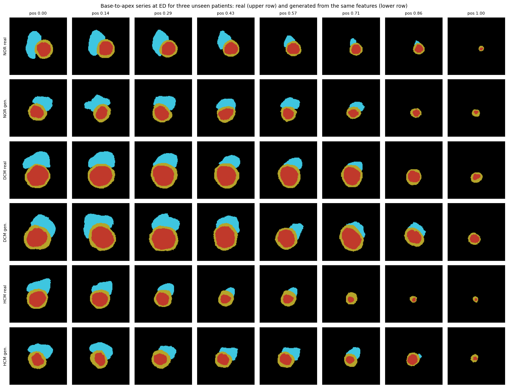
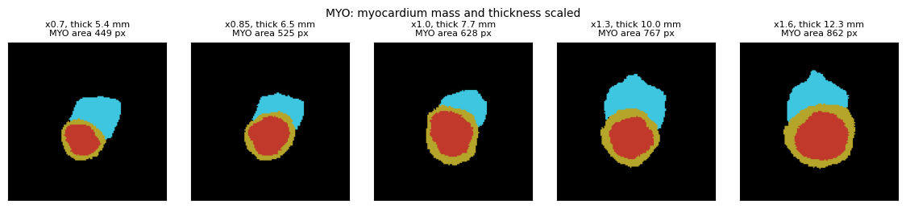
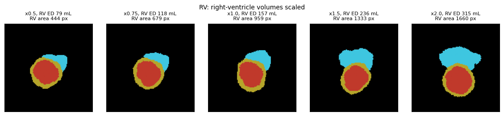
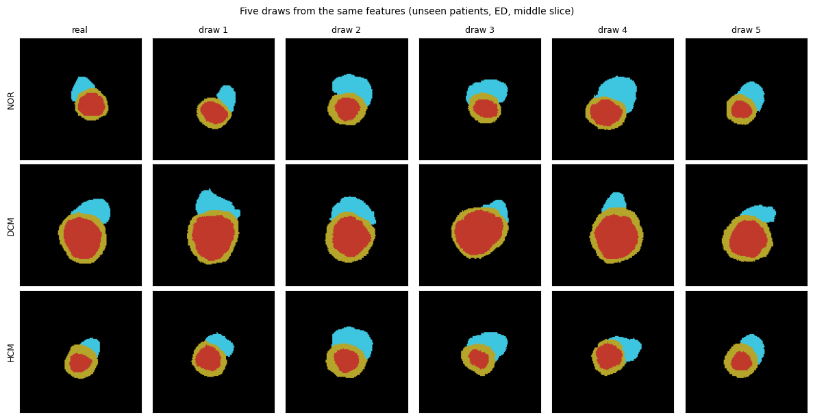
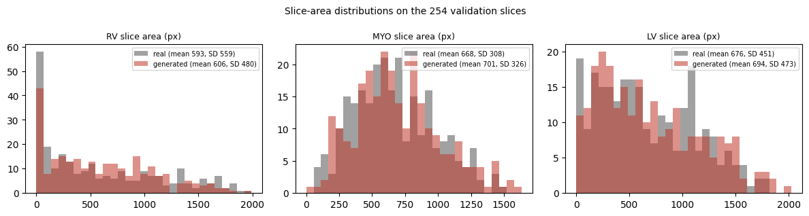
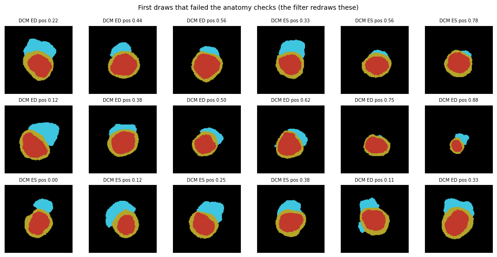
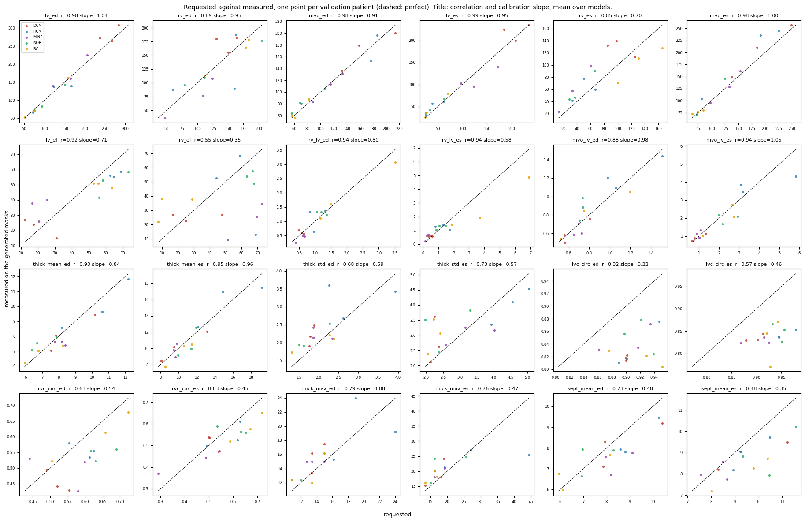
Progress
| Status | Step |
|---|---|
| Done | Datasets audited and preprocessed ACDC and M&Ms, September to October. |
| Done | Baseline: mask to image SPADE GAN trained and evaluated. |
| Done | Two-stage pipeline Features to mask to image, run end to end (15 to 29 October). |
| Done | Flow matching image model FID from 189.5 to 118.8 (29 October). |
| Done | Baseline without the profile; memorisation check The profile helps; no exact copies found (2 November). |
| Done | 26 features and flow mask generator Size bias fixed, features tested by removal, anatomy filter (3 to 11 November). |
| Done | Numeric and visual evaluation of features to masks 24 features checked one by one, shuffle control, sweeps, diagnosis groups and figures (11 November, see Results). |
| Now | Whole pipeline test with the final mask generator Then write up the feature changes. |
| Next | Usefulness and privacy tests Segmentation on real, synthetic and combined data; membership inference. |
| Next | Test sets ACDC test set and M&Ms, only after the design is frozen. |
| Next | Paper and thesis Conference paper target around 1 December; thesis defence June 2027. |
The dated project log with every run is in the full details.
Team
Glossary terms
Heart and data
| Term | Meaning |
|---|---|
| CMR | Cardiac magnetic resonance: a scan that films the beating heart without radiation. |
| LV, RV, myocardium | Left and right ventricle (the two pumping chambers) and the muscle ring around the LV. |
| ED, ES | End-diastole (heart full) and end-systole (heart squeezed). Both phases are used. |
| EF | Ejection fraction: 100 × (ED volume − ES volume) ÷ ED volume, the share of blood pumped out per beat. |
| Segmentation mask | A label image: every pixel is background, RV, myocardium or LV. |
| NOR, DCM, HCM, MINF, RV | The five ACDC groups: normal, dilated cardiomyopathy, hypertrophic cardiomyopathy, previous heart attack, abnormal right ventricle. |
| Clinical profile | The patient information used as the condition: here the 26 features. |
Methods and evaluation
| Term | Meaning |
|---|---|
| Conditioning | Giving a model extra information (the profile or a mask) so the output follows it. |
| VAE | A model that compresses and rebuilds data through a small random code. First stage 1 model. |
| GAN, SPADE | A generator trained against a discriminator. SPADE feeds the mask into every generator block so the image keeps its shape. |
| Flow matching | Turns noise into data in many small steps along a learned direction (50 steps here). |
| Classifier-free guidance | Train with the condition sometimes dropped, then push the output towards the condition when generating. |
| FiLM | A layer that scales and shifts features using the condition. |
| FID, KID | Distances between real and synthetic image sets, from Inception features. Lower is better. The real-vs-real floor (FID 99.0) is always shown for reference. |
| Anatomy checks, filter | Rules a mask must pass (one region per class, LV present, myocardium wraps the LV, RV touches the heart). The filter redraws a failing mask. |
| Shuffle control | Feed one patient the features of another and see which one the mask follows. |
| Round trip | Measure the features of a generated mask and compare them with the requested ones. |
Longer glossary with references: full details.